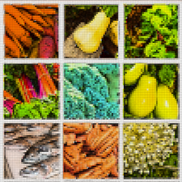

Recently we've been involved in building a number of applications made to help support local food systems. And so we're hosting an event for the Eat Local Week to talk about the quickly evolving intersection of tech and local food.
Anthony Nicalo, CEO of Foodtree and and Justin Crawford, dojo4 CEO, will talk about the current romance between the food movement and consumer tech innovation. How can we leverage the power of technology to support our farms, growers and food? Can the food movement go viral? Is Slow Food provoking the birth of Slow Tech? The presentation will be followed by discussion and locally sourced refreshments. Hosted at dojo4, Friday, 9/2, 5pm.
Come and bring your friends!